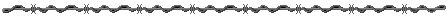
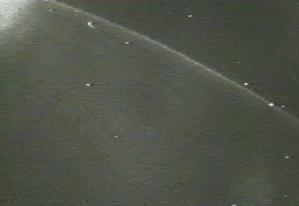

SPACE SHUTTLE DISCOVERY
MISSION STS-48
CAPTURES UFOs ON VIDEO
On September 15, 1991, between 20:30 and 20:45 Greenwich Mean Time, the TV camera located at the back of Space Shuttle Discovery's cargo bay was trained on the Earth's horizon while the astronauts were occupied with other tasks. A glowing object suddenly appeared just below the horizon and "slowly" moved from right to left and slightly upward in the picture. Several other glowing objects had been visible before this, and had been moving in various directions. Then a flash of light occurred at what seemed to be the lower left of the screen; and the main object, along with the others, changed direction and accelerated away sharply, as if in response to the flash. Shortly thereafter a streak of light moved through the region vacated by the main object, and then another streak moved through the right of the screen, where two of the other objects had been. Roughly 65 seconds after the main flash, the TV camera rotated down, showing a fuzzy picture of the side of the cargo bay. It then refocused, turned toward the front of the cargo bay, and stopped broadcasting.

"Star Wars" over Australia?
By Graham Stewart

UFO investigators were quick to dispute this interpretation, and US scientist Richard C. Hoagland soon conclusively demonstrated the objects were actually large-sized and many hundreds of kilometres away from the shuttle.
One UFO in particular appears to rise up from below the Earth's dawn horizon and can be clearly seen emerging from behind the atmosphere and the 'airglow' layers. It is certainly in orbit around the Earth, some distance out in space, and travelling quickly.
A sudden, bright flash of light is then seen to the left of the picture, below the shuttle. The UFO then turns at a sharp angle and heads out into space at very high speed. Two thin beams of light (or possibly condensation trails) move rapidly up from the Earth's surface towards where the UFO would have been if it had continued in its original orbit.
Subsequently, careful analysis of the video shows that:
The light flash and light beams (or contrails) that shoot into space have variously been described as a ground-based attempt to disrupt or destroy the UFO. Hoagland interprets the incident captured by the Discovery's videocamera more specifically as a "Star Wars" weapons test against a Star Wars drone (the UFO). Other UFO investigators prefer to describe it as a Star Wars attempt against an extraterrestrial UFO. Whichever version you prefer, the technology implied is most certainly impressive - at least of Star Wars calibre.
More recently, from New Zealand, investigators have reviewed the video and corrected the actual time it was taken. They have found that the UFO incident was recorded over Australia and not the Philippine islands as was originally thought. Discovery's trajectory had already taken it across Surabaya in Java and above the Simpson Desert, Western Australia.
The UFO is first picked up coming over the horizon when the shuttle is close to Lake Carnegie, WA. Later, the light flash and one contrail can be tracked back to Exmouth Bay near the North West Cape military facility. A second contrail can be tracked back to the Pine Gap military facility in central Australia.
US investigators have been asking their Australian counterparts to provide further information which they don't have and which they probably can't get. All the information we have on this incident so far comes from the US or New Zealand. And, of course, there are Australia's stringent secrecy laws to contend with.
The scenario was probably captured on video purely by chance. Along with other UFO incidents recorded on video by NASA, this material has contributed significantly towards NASA's recent decision to discontinue live television transmissions from space.